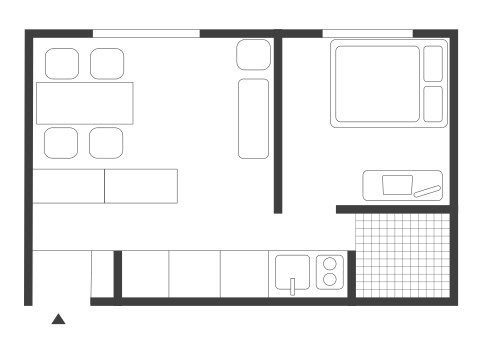

G-ARCH PROJECT

오랜만에 돌아온 회원 인터뷰인데요. 오늘도 어린 시절부터 이야기 해볼게요. 어릴때 어떤 사람이였는지 얘기해주세요.
지금도 그렇긴 한데 어릴 때는 되게 내성적이고, 딱 친한 친구들끼리만 놀았어요. 근데 여자친구들이 되게 많았던 것 같아요,
그냥 소수의 몇 명하고만 친하게 지내는 스타일이었어요?
무리가 다 있었어요. 근데 한 지역에서 초중고를 다 나오다 보니까 어차피 다 아는 사이었어요.
친구 무리마다 다 특징이 있잖아요. 어떤 친구들하고 주로 어울렸는지, 친구들하고 어떻게 시간을 보냈는지 궁금해요.
저는 여자인 친구들 무리가 있었고 그리고 그 운동 좋아하는 친구 중에 한 명이 저랑 되게 친한 친구였어요. 그래서 약간 반반 섞여 있었죠. 보통 끝나고 떡볶이 먹으러 가고 수다 떨고 그런 거 좋아하고, 남자애들이랑은 그냥 주말에 밥 먹으러 가고 학원 같이 다니고요.
그렇군요. 책 읽는 걸 좋아했다고요?
중학교 2학년 이쯤부터 약간 나는 너네랑 좀 다르고 뭔가 내 지식을 더 뽐내고 싶어 약간 이런 사춘기가 와서 그때 일본 소설 같은 걸 엄청 봤어요. 근데 그게 되게 지금은 또 어떤 내용인지 솔직히 잘 기억도 안 나고 하는데 그래도 좀 좋은 영양분이 되지 않았나. 책 읽는 약간 습관 같은
어렸을 때부터 본인이 게이라는 건 알았어요?
한 고등학교 2학년 때쯤 정도 자각한 것 같아요. 그전까지는 몰랐어요.
게이라고 생각을 안 해봤어요?
네. 여자친구도 있었어요.
그럼 사춘기 때 야한 동영상이나 이런 걸 봐도 별 생각이 없었어요?
저는 그게 야하다 이걸로만으로도 엄청 자극이 세고 그랬는데, 어느 순간 찾다 보면은 그런 게 나오잖아요. 그런 게시물이 봤는데 처음에 너무 놀라서 껐어요. 근데…
자꾸 생각나요?
괜찮은 것 같기도 한데? 약간 좀 마음에서 죄책감 같은 게 생겨서 의식적으로 더 안보려고 하고…
처음엔 그럴 수 있죠. 고2 때는 어떤 계기로 그럼 자각한 거에요?
반이 바뀌면서 새롭게 친해진 친구가 있었는데, 맨날 걔랑 같이 다녔거든요. 친해지는 마음에서 좋다고 생각했는데 걔가 여자친구가 생겼는데 엄청 큰 배신감이 느껴지고 상실감이 느껴졌어요. 내가 좋아하고 있다는 걸 그때 깨달았어요. 그래서 나는 좀 다르구나 생각했어요.
주변에서 게이같다는 얘기를 들어보거나 그런 적은 없고요?
있었어요. 여자애들이 맨날 같이 노니까.
그런 말을 들었을 때는 별 생각 없었어요?
놀리지 마!
단호했네요. 이야기를 들어보면 초중고를 평범하게 다닌 것 같은데, 진로는 어떻게 결정하게 된거에요?
맨 처음에 이제 졸업하고 컴퓨터 학과를 갔어요. 처음에 학교를 갔는데 너무 안 맞는 거예요. 그래서 자퇴를 하고 재수를 했어요.
뭐가 제일 안 맞았어요?
맨 처음에 언어부터 배우는데 이거 왜 배워야 되는지 잘 모르겠고 그리고 내가 여기 나온 이후의 진로가 안 그려졌었어요.
근데 또 성향상 지금와서 생각해 보면 잘할 수도 있었지 않을까 이런 생각도 할 것 같아요.
맞아요. 근데 고등학교 때까지는 계속 공부만 하니까 자기 진로에 대해서 크게 생각 안 하면서 공부하잖아요. 그래서 근데 대학교에 가고서 처음으로 생각한 것 같아요, 내가 하고 싶은 게 뭘까? 근데 이건 아니다. 그때는 개발자라는 직업도 사실 잘 몰랐고요. 그만두고 나는 약간 뭘 좋아하는지 생각하는데, 예전부터 그림 그리는 걸 좋아했어요. 근데 부모님이 누나가 음악을 하니까 저는 예체능 쪽으로 안 갔으면 좋겠다고 계속 얘기를 했었어요.
누나가 너무 힘들어 보여서요?
돈을 많이 빼먹으니까.
돈이 많이 들어서.
그래서 너는 그냥 공부를 해라 그리고 공부 머리가 그렇게 노력을 안 하는 타입이지 공부 머리는 나쁘지 않았어요. 그냥 하면 하는 대로 좀 나오는 편이었어서 그래서 조금만 하면은 할 수 있겠다 해서 했었어요. 그래서 성적으로 갈 수 있는 학교 중에 미술에 관련된 직업까지 연계될 수 있는 게 건축 쪽이라고 생각을 했었어요.

학교에서 실내건축을 전공으로 뽑은거에요 아니면 학부로 뽑은거에요?
실내건축이랑 건축이랑 공학이 같이 학부로 뽑았어요.
그러면 2학년 때 자기가 전공을 정하는 거예요?
맞아요
그러면 처음 학교에 갔을 때는 건축을 생각하고 가서 가서 실내 건축으로 바꾼 거예요?
아니요. 저는 처음부터 실내건축으로 생각했어요.
왜 실내건축으로 생각했어요? 실내건축학과가 많지 않잖아요. 건축학과는 진짜 여기저기 다 있는데 실내건축학과는 그만큼 많지 않아서 궁금해요.
그냥 뭔가 스케일이 저한테 너무 크다고 느껴졌어요.
실내건축학과가 건축학과랑 배우는 게 크게 다르지 않은 데도 있잖아요. 실내건축학과마다 다른 걸로 알고 있어요. 스케일이 작지 않고, 건물 단위까지 하는 데들도 있고 실내 건축인데 좀 더 상업적인 디자인을 하는 곳도 있고요.
저희 학교는 중간쯤이었던 것 같아요. 지금 생각해 보면 커리큘럼이 이상했어요. 수업도 좀 작은 스케일 위주로 가구를 한다든지 뭐 VMD를 한다든지, 논문은 또 실내 건축에 대해서 약간 쓰고요. 근데 졸전은 건물 단위로 했어요.
갑자기 졸전에 건물을 만들어야 했군요.
그래서 2명이서 한 팀을 시켰어요.
둘이서 졸전을 해요? 그럼 그 짝은 어떻게 정해요?
그냥 알아서 정해오라해요.
그럼 친구가 없고 아싸면 어떡해요?
그러면 남는 애.
졸전에 설계한건 어떤 건물이었어요?
저는 약간 반려견이랑 같이 사는 주거를 했어요. 근데 같이 했던 친구랑 저 둘 다 강아지를 안 키워서 중간쯤에 우리가 이걸 왜 선택했을까 고민하다가 그냥 이걸로 밀고 가자 했죠.
강아지를 위해서 특별한 걸 계획한 게 있어요?
진짜 기억이 하나도 안 나요. 왜냐면 그때 너무 많이 싸웠고 논문도 써야 되고 해서 극으로 스트레스 받을 때여서 기억이 날아갔어요.
그래도 다행히 졸업을 잘 했네요. 학교에서 그럼 제일 재밌었던 거는 뭐예요?
저는 3학년 때인가 디스플레이 수업이 있었는데 그때 그걸 들으면서 나 실내 건축 쪽으로 꼭 안 해도 되는구나 그걸 처음 깨달았어요.
실내 건축하고 디스플레이는 또 다른 분야죠?
네. VMD 영역이 또 회사마다 많으니까 그래서 제가 유통 쪽도 좀 좋아하고 하니까 유통 VMD 이런 쪽으로 좀 해볼까 해서 인턴도 좀 했어요. 원래 그전에 3학년 여름실습을 한두달 정도 아뜰리에 실내 건축 사무소로 나갔었거든요. 근데 가서 할 수 있는 일이 별로 없잖아요. 중요한 걸 시키지도 않으니까. 종이나 자르고 있고 그랬는데, 한 번은 감리를 갔다 오라고해서 현장을 갔는데, 제가 먼지 알러지가 있는 줄 그때 처음 알았어요.
먼지 알러지요?
네 현장 갔는데 먼지 너무 심하고 하는데 마스크 썼는데도 저 다음 날에 몸살 났어요. 그래서 나 이 분야로는 진짜 좀 힘들겠다 생각했었죠.
건강 이유로라도 그건 어렵겠네요.
근데 그때는 그냥 내가 몸이 안 좋겠거니 하고 넘겼고, 이후에 아는 분이 그때 신세계백화점 5층 신발 매장들 싹 리뉴얼할 때, 거기 현장 감리하는 거 알바하라고 저한테 시킨 적이 있었어요. 근데 거기 갔는데 그냥 가만히 앉아 있으면 되는 건데도 진짜 못하겠는 거예요.
특이하네요.
그러는 와중에 이 VMD 수업을 듣고서 좀 내가 현장에서 일하지 않아도 할 수 있는 게 있겠다 생각했어요.
근데 사실 백화점 VMD가 결국 아까 말한 그 신세계 백화점 감리 가고 하는 것도 VMD가 하는 거잖아요.
맞아요. 근데 좀 더 뭐라고 해야 되지 완전 인테리어 공사로 나가는 건 아니고 유통 쪽은 좀 팝업이나 이런 걸로 하니까 그건 또 나름 괜찮더라고요.
그냥 인테리어에 알러지가 있었던 것도 같네요.
VMD 인테리어 쪽에서 인턴을 했다고 하는데, VMD 말고도 다양한 데에서 일했다고 들었어요. 그래서 무슨 일들을 했는지 알려주세요.
VMD 회사를 다닌 후에 졸업 때가 돼서 일단 취업을 해야 되니까 USB같은 제품을 파는 회사에 들어가서 디자인 인턴을 했었어요.
그래픽으로요?
네. 사수 디자이너가 한 명 있고 그 밑에 이제 보조해주는. 그때 좀 그래픽 쪽으로 일하고 싶었던 것 같아요.그래서 거기서 좀 6개월 정도 하고, 자재 회사에 들어갔는데, 공간이 멋있고 전시도 하고 이래서 그런 이미지에 끌려서 입사했어요. 그때도 그래픽으로 들어갔어요.
자재회사에서 홈페이지에 이미지 만들고 이런 걸 한건가요?
그런 것도 하고 그냥 페이퍼 작업들도 하고 그리고 건물에 붙는 사이니지도 하고요.
얼마나 다녔어요?
1년 반이요.
꽤 오래 다녔네요. 몇 년도에 다닌 거예요?
그게 언제지 그게 16년인가 17년에 다녔어요.
그때쯤이면 제가 자재 보러 가고 했을 때도 있었겠어요.
근데 저는 항상 3층에 짱박혀 있었어요.
그 다음에는 무슨 일을 했어요?
그 다음에 지금 다니고 있는 회사인 가구회사로 갔었어요.
자재회사는 왜 그만둔 거에요?
거기서 하는 일이 남는 일이 아니라고 해야 되나. 거기서 제가 진짜 많이 시간을 썼던 일 중에 하나가 블로그 쓰는 거예요. 그래픽을 하러 왔는데 블로그 쓰고 있고, 작업물도 보여줄 만한 작업물을 만들지도 않고요. 그냥 포스터 디자인만 했어요, 그리고 그때 제가 그래픽을 잘하는 건가 이거에 대한 의구심이 있었어요. 나 못하는 것 같은데 그러면 좀 기획 쪽 일을 해봐야겠다. 왜 기획이냐하면 당시 회사에 디자이너가 3명 있었는데 다 같은 디자이너지만 하는 일이 역량에 따라서 자연스럽게 분배가 돼요. 저는 나중에는 좀 더 행사나 전시 기획 쪽으로 일이 고정됐거든요. 그래서 나 기획하고 스케줄 정리하고 이런 거 좀 잘하는 것 같은데 기획 쪽으로 한번 해보자.

같이 일하다 보니까 자연스럽게 한 사람은 이미지 만드는 일을 전담하고 강씨는 기획하는 일을 점점 하게 되니까 그게 좀 잘 맞는다 생각한 거네요.
되게 자연스러웠어요. 그리고 다음에 가게 된 가구회사에서 마침 기획팀을 처음 만들었어요. 자재회사에 있을 때 행사도 같이 몇번 했어서 가구회사 대표님을 알고 있었고요.
그때는 가구회사 직원이 몇 명이었어요?
그때 한 20명도 안 됐던 것 같은데 지금도 비슷해요.
가구회사에서는 상품 기획 쪽 일을 하는 거예요?
맨 처음에 그냥 기획팀이었어요.
기획팀과 상품 기획은 또 달라요?
그러니까 기획팀이 처음 생기다보니까 일이 안 정해져 있었어요.
일을 만들어야 되는건가요?
좀 그런 느낌이었어요. 왜냐하면 제품팀이라고 팀이 따로 있어서 보통 제품기획은 그 팀에서 많이 했었거든요. 근데 기획팀이 생겼고, 팀장님이 그래픽 디자이너였고 저랑 산업디자인 출신 친구가 팀원으로 들어와서 셋이 같이 기획팀이었어요. 맨 처음에는 팝업 같은 걸 기획하다가 점점 뭔가 작은 소품류들 한번 해봐라 해서 그런 걸 기획안 써서 제품 팀에 넘기고 제품 디자인해주는 프로세스가 만들어졌어요.
지금 회사도 중간에 그만 뒀었다고 들었어요. 처음에 얼마나 다닌거에요?
한 2년 다녔어요. 그 다음에 가구 수입회사를 갔어요.
거기서는 무슨 일을 했어요?
온라인 팀의 팀장을 했어요.
온라인 팀은 뭐 하는 곳이에요?
제가 다닌 가구 수입회사가 매출이 거의 다 온라인에서 나는 구조여서 프로모션 기획이라든지 사이트 전체적인 구성을 계속 리뉴얼 해 주는 일, 상품 등록하는 일들을 했어요.
그럼 온라인 몰 전체를 다 관리하는 거네요. 가구 수입회사는 어떻게 가게 된 거예요?
가구회사에서 이직할 때 수입 가구쪽으로 일을 해보고 싶다는 생각이 있었어요. 맨 처음에 공고가 떴던 데에 지원해서 갔어요.
그러다가 다시 다녔던 가구 회사로 돌아온 걸로 알아요. 가구 회사에 다시 돌아와서는 뭘 하고 있어요?
지금은 완전 상품 기획을 해요.
그때는 그냥 기획팀이었고 지금은 상품 기획이군요. VMD나 인테리어, 자재 회사, 가구 회사, 가구 수입회사가 다 다른 분야지만 그래도 조금씩 연관되어 있는 것 같긴 해요. 물론 직무도 다 달랐지만 서로 연관 되어 있다 보니까 해온 일들이 다음 일을 할 때 도움이 되는 부분도 있을 것 같아요.
애초에 저는 여러 가지 분야의 일을 다 해보고 싶다는 생각이 있었어요. 근데 그게 이제 리빙으로는 묶여 있었던 것 같아요. 그렇게 다른 분야로 빠지지 않고 리빙 안에서만 좀 그렇게 여러 가지 일을 해보자.
리빙에 제일 관심이 있고 그걸 하는 자재회사든 가구 회사든 뭐 가구 수입업체든 이런 그 안에서 좀 움직였다는 얘기네요.
뭔가 다 해봐야지 나중에 내가 진짜 하고 싶은 거를 할 수 있을 것 같다는 생각을 했었어요.
나중에 내가 하고 싶은 거는 뭐예요?
그건 명확하게는 없지만 무언가가 생기면 그걸 할 수 있지 않을까. 그냥 뭔가 다 해봤으니까 혼자서 뭔가 회사를 차려도 이렇게 이렇게 움직이는 어떤 사이클은 대략 다 알고있어서 그렇게 할 수 있지 않을까 이런 생각을 하면서 일을 했었던 것 같아요.

지금 회사에서 이전의 기획팀과 지금의 상품 기획은 무슨 차이가 있어요?
이전에 다닐 때는 행사 기획도 하고 사이트 리뉴얼도 하고 그리고 외부 채널 관리라고 해야 되나 29cm나 다른 입점몰 같은 거에 상품 등록 관리하고 이런 것도 다 기획팀에서 하고 했었어요. 방대한 일을 같이 했는데, 회사를 다시 돌아가 보니까 그게 다 팀으로 쪼개졌어요.
일이 많이 줄었겠네요. 지금은 기업들하고 굿즈 개발을 하고 있다고 들었어요. 어떤 회사들하고 무슨 일을 하는지 궁금해요.
올해 초에는 프랜차이즈 카페랑 같이 매장이랑 온라인에 MD 상품들 그거 개발해서 출시를 했어요. 그리고 요새 하는 거는 또 다른 프랜차이즈 카페랑 서점이요.
서점이랑은 무슨 일을 해요?
비슷한 굿즈를 만들었어요.
가구회사지만 다른 회사랑 만드는 굿즈가 꼭 가구는 아니죠?
그렇죠 주로 철제 그런 소품 같은 것들이에요.
기존 그냥 상품에 그냥 로고나 컬러만 바꿔서 판매하는 건가요?
신규 디자인할 때도 있어요. 그래서 계약서부터 제가 쓰고 그냥 납품이 완성이 될 때까지의 과정을 쭉 다 챙기는 일을 해요.
그러면 수익은 어떻게 해요? 그냥 단순 용역이에요?
여러 가지 방식이 있는데, 저희는 소비자가가 정해진 기성 상품의 경우는 납품하는 수량에 따라 할인율을 적용해서 넘기고 그리고 신규 디자인은 최소 moq가 천 개부터라서 거기에 이제 디자인피를 따로 붙이거나 그렇게 해서 진행해요.
실제로는 납품해서 거기서 판매하는 거라고 봐야 되는거네요.
맞아요. 아니면 뭔가 신규 입사자 웰컴 굿즈 개발해달라는 것도 있고, 그런 뭔가 조그마한 물건들을 만들어야 되는데 그런 거를 이제 일반 그런 판촉 업체 하기에는 퀄리티가 너무 떨어지니까요.
퀄리티도 떨어지고, 아무래도 가구회사의 브랜드 네임도 있으니까 다른 회사들이 좋아하겠네요.
그래서 약간 대기업 위주로 연락이 오는 것 같아요.
그럼 주로 하는 일은 콜라보 하는 소품들 위주로 하겠네요. 가구를 그렇게 하지는 않아요?
가구는 팀이 따로 있어요. 인테리어하는 사람이랑 같이 묶인 팀이 있어서, 사무실 리뉴얼하면 거기에 맞춰서 제안하는 팀이 또 있어요.
사무실 리뉴얼하는 거를 맡기면 회사 제품으로 디자인을 같이 해주나 봐요.
기성제품에서 조금 변형까지는 해주는데 신규 디자인도 하는지는 잘 모르겠네요.
다시 회사에 돌아가서 다닌 지는 얼마나 됐어요?
이제 1년 반 됐어요.
전에 다녔을때 보다 더 나은 점이 있어요? 어쨌든 그만둘때는 이유가 있었을 거잖아요.
돈을 조금 줬는데, 옮겨다니면서 연봉을 조금씩 올렸고 거기에 맞춰서 돌아왔을 때 그만큼 대우를 해줬어요.
그래서 지금은 만족해요?
저는 만족하는 것 같아요.
좋네요. 지금 리빙 쪽에서 계속 일을 하고 있으니까 좀 관심 가지고 있는 국내든 해외든 브랜드가 있는지 그런 것들도 궁금해요.
저는 HAY가 제일 잘하고 있는 것 같아요. 지속적으로 아이템도 개발도 잘 하면서 가격대가 합리적이게 나오잖아요. 그래서 일하면서도 그런 부분들을 잘 참고해야겠다 생각해요.
근데 강씨가 다니는 브랜드는 철재라는 특정 소재가 브랜드의 특징이 되는 느낌인데 헤이는 꼭 그렇지 않잖아요.
맞아요. 저희가 되게 혼란스러워해요. 그래서 항상 매년 이 철재라는 소재를 벗어나야 되는 건지 갇혀야 되는건지 고민이에요.
그럴 수도 있겠네요. 벗어나면 또 너무 정체성이 없어지는 것 같고 갇혀 있으면 할 수 있는 게 제한이 걸리고요.
맞아요. 그래서 철재 가구 브랜드들도 많이 눈여겨 보는데, 뉴텐던시 같은 회사도 보고 있고요.
뉴텐던시는 잘 몰라요. 어느 나라 회사에요?
독일 회사인데 원래 이제 수입이 안 되다가 29cm에서 이제 계약 맺어서 직수입하는 것 같더라고요. 비슷한 회사 중에 nm3라는 데도 있어요. 그리고 저희가 알루미늄으로 요새 가구를 좀 만들어보자 했는데 쉽지 않아요.
왜 그런 거예요? 소재가 다루기가 어렵나요?
알루미늄 가공을 잘 못해서 저희가 보통 외주를 줘요.
외주 제작할 때 퀄리티 컨트롤이 안 되나보네요.
네 그래서 그런 걸 잘하는 데가 국내 가구 브랜드인데 RKRN이라는 데가 있거든요. 가구를 그냥 한영키 누른거에요
찾아보니 가격이 꽤 있네요?
네. 알루미늄이 좀 가구가 비싸요,
알루미늄 원래 좀 가공이 어려워서 그렇군요. 근데 그건 사용할 때도 까다롭다는 얘기 아니에요? 생활기스나 이런 거 약하고요.
네 그래서 그래서 애초에 비싸게 파는 게 맞는 것 같아요. 그러니까 싸게 파는 데 기스가 나면 사람들이 화내는데, 아예 비싸게 팔고 사용할 때 기스 나면은 자책을 해요.
이 비싼 걸 내가 이렇게!
네 맞아요.
지금 하고 있는 일의 목표도 궁금해요.
내년도 되면은 새로운 상품들 나올 텐데 작년에 제가 했던 것들은 좀 다 잘 되고 있어서, 이제 저희 내부에서뿐만 아니라 외부에서도 이거 누가 기획해서 만든 거라고 좀 잘 알려 졌으면 좋겠어요.
외부에 본인의 이름이 드러날 정도로 잘 됐으면 좋겠다는 거네요.
근데 이게 디자이너의 이름은 올라가는 경우가 많은데 기획자의 이름이 올라가는 경우는 많이 없어요. 기획자랑 디자이너가 같은 사람인 경우가 많기도 하고요.
목표를 이루려면 지금까지 없던 깜짝 놀랄 만한 기획을 해야겠는데요?
그래서 또 잘 보여주려면 어떻게 보여줘야 되는 건가 이런 생각도 좀 해요.
어떤 식으로 일을 하고,어떤 식으로 이렇게 보여줘야 외부에 더 많이 노출 되고 내 가치를 같이 올릴 수 있을까 이런 생각을 한다는 거네요. 이 일 관련해서 혹시 뭐 좀 더 하고 싶은 얘기 있어요? 질문이 충분했는지 모르겠네요.
아니요 다 한 것 같아요. 충분해요.
근데 공간을 만드는 건 그렇게 관심 있지 않은가 봐요?
공간은 모르겠어요. 예전에는 되게 엄청 좋아했거든요. 근데 지금은 일을 하면서 이제 조금 관심사가 예전에는 아까 말한 것처럼 리빙이 중점이었다면 지금은 꼭 리빙이 아니더라도 내가 어떤 일을 기획하는 거에 더 가치를 두는 것 같아요.
일을 잘 만들고 일을 잘 굴러가게 하고 기획하는 것들이 더 중요해졌군요.
맞아요.
그것도 좋네요. 내년에 깜짝 놀랄 만한 기획을 하길 바랄게요.
마지막으로 지금 이제 살고 있는 집 얘기할 건데 지금 살고 있는 집에 대해서 간단하게 소개를 좀 해주세요.
오피스텔이고 분리형 원룸입니다.
지금 이 집으로 이사하게 된 계기가 뭐예요?
원래 부모님하고 같이 살다가 한 30대부터 나와서 살고 있어요. 사실 제가 사람을 만나기 시작한 게 딱 30살부터예요.
고등학교 2학년에 깨달았다고 했는데, 30살 전에는 그러면 사람을 안 만났어요?
대학교 때까지는 친구들이 많았어 가지고 그런 외로움을 잘 모르고 지냈었어요.
데이팅 어플 이런 것도 한 번도 안 해본건가요?
대학교 때까지는 깔아보지는 않았고 그리고 근데 이제 이반시티는 가입돼 있었어요. 그래서 그냥 가끔 죄책감 느끼면서 한 번씩 보고 내가 이게 맞나? 근데 그러다가 누나한테 한 번 들키고요.
한 것도 없고… 뭘 하고서 들켰으면 억울할텐데요.
그래서 대학교 과제라고 그랬어요. 이런 거 탐구하는 과제가 있다고. 믿지 않는 것 같았어요.
그럼 대학 졸업하고는 그래도 사람을 좀 만났어요?
서른 전에 만나긴 만났는데, 따로 친구들을 만나거나 이쪽 자주 나오거나 이런 건 없었어요. 한 27, 28 이때 첫 연애를 했었어요.
그땐 얼마나 만났어요?
오래 못 만났어요. 한 6개월 7개월?
그러면 서른 살이 되면서 본격적으로 자유롭게 게이로서 살 거야. 이러고서 독립을 시작한 거예요?
집이 너무 멀어서 일단 자취를 하는데 이제 또 혼자 사니까요.
겸사겸사네요.
근데 그래도 종로 이태원을 간 지는 진짜 얼마 안 됐어요. 한 작년 재작년?
그러면 지금 다 재밌을 때네요?
너무 재밌죠.
그러면 그 뒤로는 연애를 종종 계속하고 있어요?
요새는 못 만난 지 좀 됐어요. 약간 노는 시기부터 이제 못 만나지기 시작한 것 같아요.

더 열심히 놀아야 되는 거 아닌가요. 나와서 처음 산 게 그럼 30살부터면 지금 집이 한 세 번째 집이에요?
네 번째에요.
이사를 자주 했네요. 어느 동네에 사셨어요?
맨 처음에 문정동 회사 근처에 있었어요. 그러다가 다시 본가에 들어간 적이 있었어요. 문정에서 2년 살고 그다음에 일산 다시 돌아가서 1년 살다가 그때부터 쭉 서울 살았어요.
다시 서울로 나왔을 땐 어디로 나왔어요?
다시 나왔을 때는 청계천 쪽이요.
종로가 가까워서요?
아니요. 그때 가구회사가 장한평이었거든요,
근데 장한평이면 왜 청계천에 집을 구했어요.
그떄는 여기 동네가 좀 험하다고 생각했어요.
그때만 해도 동네에 이런 오피스텔이 없었죠?
네 청계천 쪽은 공원도 있고요.
청계천 쪽에 근데 집이 있나요?
청계천 따라서 오피스텔이 쭈르륵 있거든요.
동대문 지나서 청계천 쪽을 말하는 거군요.
네 신설동 그쪽 라인이요.
그럼 거기 살다가 그다음에는요?
가구수입업체 근처인 수서로 갔어요.
회사가 수서에 있었군요.
지금 한남동으로 옮겼는데 그때까지만 해도 수서여서 수서로 이사 갔어요.
그랬다가 지금은 또 지금 회사 따라서 왔는데 회사는 이사를 갔다고요?
네 원래 걸어 다니려고 여기로 이사 온 거였는데…
그러면 다음에는 또 회사 근처로 가나요?
그렇진 않을 것 같고 아직 모르겠어요. 연장할 수도 있고
여기 동네 분위기가 어떤지도 간단하게 얘기해 주시면 좋을 것 같아요. 저도 장한평에 올 일은 잘 없는데 오늘 와보니까 큰 길 따라서는 직장인들이 살 법한 오피스텔이 좀 꽤 있는 것 같아요. 그 외에도 뭐가 좀 있나요.
뭐가 많진 않고 그냥 좀 소박한 동네 그런 느낌이에요.
동네에 특징이 있을까요?
특징은 사람들이 잘 모른다.
여기가 어딘지를요?
설명할 때 군자 옆이다. 아니면 건대 근처라고 이야기해요. 항상 어떻게 설명해야 될지 잘 모르겠어요.
전에 살았던 동네 예를 들면 문정이나 수서나 청계천 쪽은 어땠어요? 살았던 동네 중에 제일 좋았던 동네가 어디예요?
수서도 좋았고 청계천 쪽도 좋았어요.
어떤 점이 좋았는데요?
근데 수서는 동네가 조용하고 공원도 많고 지내기에는 좋았어요. 청계천은 어딜 가도 좀 가까운 편이고 그리고 청계천 따라서 산책하는 것도 좋았어요.
동네에 걸을 만한 데가 있는 게 되게 중요한 것 같긴 하더라고요. 그러면 다른 집들도 다 이런 비슷한 오피스텔에서 살았어요?
맞아요. 계속 그랬던 것 같아요.
오피스텔만 가는 이유가 있어요?
냉장고 같은 거 좀 사는 거 좀 귀찮아서요.
일산에 살았으면 본가는 아파트였죠?
원래는 아파트에서 쭉 살다가 부모님이 일산에 마을 단지로 되어 있는 빌라 같은 걸 사셔서 출퇴근이 힘들어지고, 그때 맞춰서 서울로 나왔어요.
제가 왜 그걸 물어봤냐면, 쭉 살았던 집이 아파트면 독립해서 나왔을 때 혼자 사는 집 중에 오피스텔이 가장 익숙한 주거형태여서 오피스텔을 구했을 수도 있겠다 싶어서요.
그럴 수도 있어요. 맞아요.
신도시 아파트에서 쭉 자랐던 친구들 같은 경우에는 빌라가 있는 동네들은 익숙하지 않을뿐더러 조금 꺼려하는 부분도 경우가 있는 것 같아요.
맞아요. 빌라로 가면 이제 좀 더 더 넓은 집도 찾을 수 있고 그럴 테지만, 그리고 그때 한창 전세 사기 이런 것도 많아서 다가구로 묶여 있으면 좀 불안하고 그랬었어요.

집에 택이 붙어 있는 의자도 있고 최근 테이블도 산 걸로 알아요. 가구들을 고심해서 산 것 같은 느낌이 있어요. 집에 가구를 들일 때 어떤 걸 고려하는지 궁금해요.
스케일에 맞춰서 살 수 있는 거는 사고 살 수 없는 건 안 사고.
당연한 소리를…
근데 수입 가구는 수입 가구 회사 다닐 때 싸게 살 수 있었으니까 그때 많이 샀었어요.
지금은 싸게 안 해줘요?
지금은 연락을 별로 하고 싶지는 않아요
가구 중에 사고나서 가장 만족스러운 가구가 뭐예요?
저 원래 사용하던 테이블이 원형이었는데 그 원형 아르텍을 팔고 이 테이블을 새로 다시 샀어요.
원형이 공간을 많이 차지하죠?
맞아요. 그리고 크기도 이거보다 컸어가지고 작은 걸로 바꾸니 훨씬 더 좋아졌어요.
집에 인테리어 소품들도 많네요.
이거는 제가 잠시 온라인으로 소품 파는 사이트를 열었던 적이 있어요. 그때 팔았던 거예요.
그건 언제 한거에요?
가구 수입업체 다닐 때 했으니까 한 1년 정도 했어요.
회사 다니면서 한거군요. 근데 왜 그만뒀어요?
물건이 막 집에 너무 쌓여서요.
자취하면서 한 거예요? 물건 재고를 쌓아놓고?
네. 그래도 매입한 돈 쓴 것만큼 딱 벌었어요. 그래서 그냥 남는 거 없이 땡 하고요.
쇼핑몰은 그냥 순수하게 돈 벌려고 한거에요?
아니요. 뭔가 그때 회사 다니면서 그런 욕구가 절정의 시기였었어요.
내 걸 하고 싶다는 욕구요?
네. 뭔가 한 번 실패하더라도 해보고 싶다. 근데 오프라인 매장이 있지 않는 이상 크게 키우기는 힘들더라고요. 매입도 계속해야 돼요.
다시 해볼 생각이 있어요?
경험으로 남아 있으니까 나중에 또 해볼 수도 있을 것 같기도 하고요.
마지막 공통 질문이에요. 집을 설계하게 되면 어떤 집에서 누구랑 살고 싶어요? 설계가 아니어도 집을 어떻게 꾸미고 싶고 어떻게 이제 누구랑 어떻게 살고 싶은지 그렇게 얘기해 주면 좋을 것 같아요.
뭔가 나중에 돈 많이 벌면은 청계산 거기 근처가 좋아서 그 주변에서 단독주택 지어서 살고 싶어요.
거기 너무 좋죠. 근데 거기 이번에 그린벨트 풀려서 다 아파트가 될 수도…
거기가 너무 좋았는데
거기였던 이유는 뭐예요? 자연이 좋아서?
얼마 전에 유튜브 보다가 817스페이스 대표님이 그 근처에 사는 걸 봤는데, 집이 너무 예쁘고 풍경이 너무 좋더라고요.
집은 어떻게 꾸미고 살고 싶어요?
정원을 되게 예쁘게 하고 살고 싶어요. 아침에 일어나서 물 주고 그리고 강아지도 뭔가 뛰어놀게 하고 싶고 그런 루틴이 좀 있는 집이었으면 좋겠어요.
루틴이 있는 집이라는 표현이 좋네요.
그리고 좀 뭔가 파트너랑 같이 살고 싶어요.
근데 요즘 연애를 안 하고 있잖아요. 연애를 할 생각은 없어요?
있는데 이게 뭐지 노력하니까 더 안 되더라고요. 그래서 이제 노력을 안 하기로 했어요. 내가 너무 노력하니까 안 돼서.
맞아요. 너무 노력하면 뭐랄까 오히려 잘 되기가 어렵죠. 좋은 인연이 노력없이 찾아오길 바라요!
인터뷰 진행, 사진, 일러스트 : 택